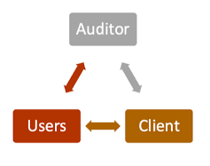
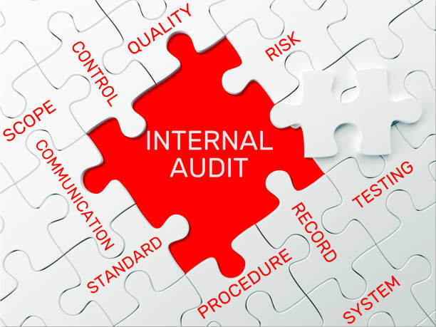

Internal Controls

- Internal controls are processes and procedures designed to safeguard assets, ensure accurate financial reporting, and promote operational efficiency. They help prevent fraud and errors within an organization.
Audit

- An audit is an official examination of an organization’s financial records, systems, and operations, usually conducted by an independent party, to ensure accuracy, compliance, and integrity in financial reporting.
Internal Audit

- An internal audit is an independent review conducted by an organization's own staff to assess the effectiveness of internal controls, compliance with laws and policies, and operational efficiency.
External Audit
- An external audit is an examination of a company's financial statements and records by an independent auditor, typically required for public companies, to provide assurance on the accuracy and fairness of financial reporting.
Risk Assessment

- Risk assessment is the process of identifying, analyzing, and managing potential risks that could impact the achievement of an organization's objectives, allowing for proper control measures to be put in place.